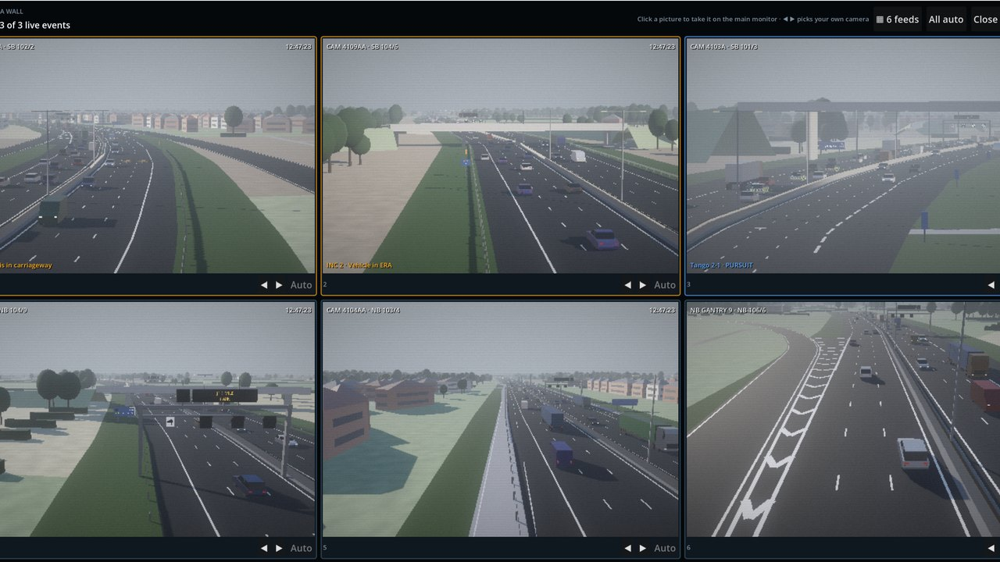

Smartway:
UK Motorway Traffic Controller
Take the desk at a smart motorway control room. Set the gantry speeds, close lanes with a Red X, send Traffic Officers, and keep any real British motorway moving and safe through a whole shift, on your own or with friends.
Run the motorway
Every UK motorway
All 76 UK motorways are built into the game from OpenStreetMap. Pick a motorway and a stretch between two junctions, and you get its real lanes, slip roads, bridges, railways and rivers, with towns and countryside built around it. You can also download the latest map for your stretch.
A 3D control room
Sit at your desk with its monitors, or stand up and walk around the room. There's a big video wall, a red LED clock, colleagues at their desks and an office that dims at night. Pick which of 23 office staff you play as, and your friends see you at your desk. Prefer the classic flat desk? Press F2 to switch.
Live CCTV
Pan, tilt and zoom 3D cameras, set presets or let them patrol, and watch a camera wall that follows the action. You get rain on the lens, fog, snow, sodium street lights, cat's eyes, night vision, and a photo mode.
Real people
Fully animated people in the control room and at the roadside. Police, Traffic Officers, paramedics and firefighters walk the scene. Drivers wait by their crashed cars and talk to the crews, and witnesses ring 999.
British vehicles
Cars, vans and lorries pulling curtainsiders, tankers, fridges and flatbeds. Police, Traffic Officer, ambulance, fire and recovery crews arrive on blue lights and drive away when the job is done, and the air ambulance lands on the carriageway.
Signals and signs
Speed limits, Red X lane closures, lane-change arrows, message signs, hard shoulder running and gantry speed cameras. Drivers stop trusting signs that cry wolf.
Incidents and weather
Breakdowns, collisions, fires, debris, animals, wrong-way drivers, police chases and suspects who run off on foot. Fog, rain, gales and snow that settles until the gritters arrive, plus day and night shifts and seasonal events.
Radio and phones
Spoken radio traffic, Traffic Officer chatter that turns into jobs, and calls from emergency refuge areas, the police and the council. Optional voice commands, with radio readbacks.
Your career
Over 20 scenarios built from the places along your road. Earn ranks and epaulettes, get promoted, or end up on probation. There are 100 achievements, desk upgrades, shift stats and a daily challenge with an online leaderboard.
Multiplayer
Host or join online games from a list, public or private with a PIN. Share the desk and the cameras with friends, with text and voice chat. No port forwarding needed.
A VR edition for Meta Quest 3 is in development.
Screenshots



What you get
- The full game for Windows 10 or 11 (64-bit), as a download.
- A personal licence key, sent to your email straight after purchase. One key activates the game on one PC.
- An internet connection is needed to activate, and for a quick licence check now and then. The game keeps working offline for up to 7 days between checks.
- Free updates to this version.
- Online play and the daily leaderboard need an internet connection. Everything else works offline.
Questions before you buy? Email plaztikman@live.com.